East wing · Other laws of physics · Room 12
Creatures that copy themselves
Give Lenia several kernels instead of one and some creatures stop being single animals. They grow, pinch in two, and each half grows again. Bert Chan found these while searching multi-kernel rules and named them plainly in his catalogue: replicator, division too slow, division well, division uncontrolled. We ran them in our own engine and asked three questions: who descends from whom, how fast can a world fill up, and does it work in three dimensions?
A family tree
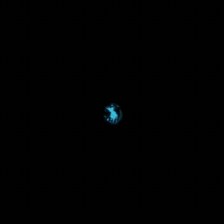
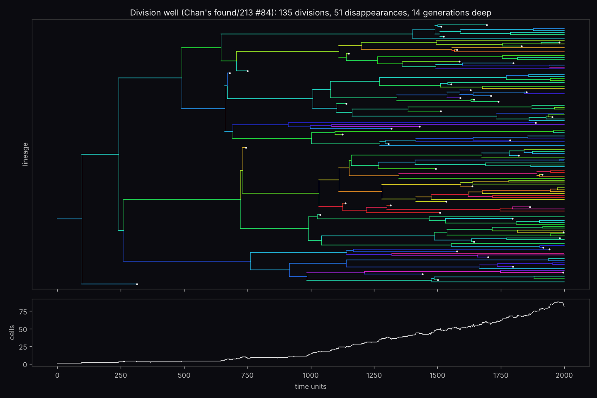
What you see. For the first few hundred time units the founder and her first daughters wander and divide rarely. Then the count climbs steadily as the world fills with membrane-wrapped cells.
What the ledger says. 135 divisions, 14 generations, 81 cells at the end, in one run C072observed. A cell here is a peak of the blurred field; the tracker cannot tell a cell that merged from one that faded.
How fast one cell fills the world
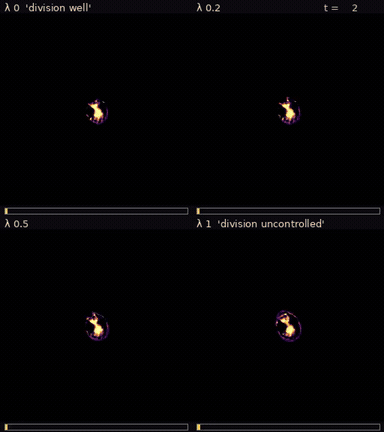
What you see. At λ 0 there are still three cells at t 600. At λ 1 the world is full by t 100, and the gaps between cells fill with a fine lattice of dots.
What the ledger says. Time to cover half the world falls about fifteen-fold, from 1175–1530 time units to 85–95, and the median never rises along the way C073observed. There is no single switch between a healthy and a runaway rule: the growth rate rises smoothly.
A replicator in three dimensions
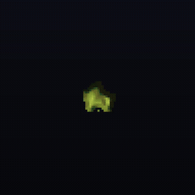
What you see. The blob stretches into a chain of beads, the beads separate, and each grows and buds again until the box is packed.
What the ledger says. One body becomes about fifty by t 300 in the largest box; it multiplies at two timesteps and in three box sizes C074observed. Its catalogue neighbour divide (found/312 #7) splits into four bodies and then, at the catalogue timestep, stops; at half the timestep a fifth body appears C075observed.
When daughters inherit their rule
Copying is half of evolution. The other half is copies that differ. So we changed the physics, and this part of the room is a modified rule of ours, not Chan's. Every bit of matter now carries a number, its genome, between 0 (division well, blue) and 1 (division uncontrolled, red), and the rule at each point is the rule for its genome. New matter inherits the genome of the matter around it, and every ten time units a faint random smear nudges genomes up or down.
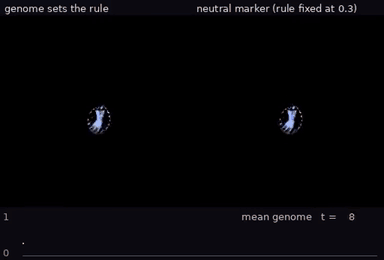
What you see. On the left, warmer cells spread and red patches appear, with the dot lattice of the runaway rule around them. On the right the colours wander but stay cool.
What the ledger says. From 0.3 the mean genome reaches 0.47–0.55 when it matters and 0.36–0.43 when it is only a marker, in all four paired seeds C090observed. From 0.7, where growth speed has levelled off, the gap is only 0.03–0.06 C091observed. Nothing here rewards speed. Faster dividers just leave more descendants.
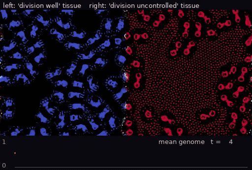
What the ledger says. By t 1000 the well half's mean genome has risen from 0 to 0.34–0.38, while the uncontrolled half has stayed at 0.98–0.99, in three seeds C092observed. Some of the spread is blending where the tissues touch.
How far does it go?
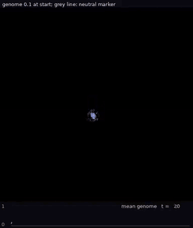
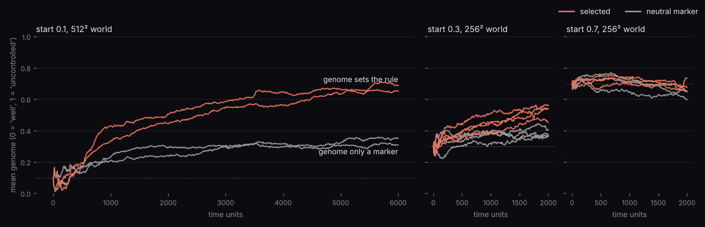
What you see. The world turns from blue to warm within the first thousand time units, then keeps warming more and more slowly.
What the ledger says. From 0.1 the genome reaches 0.65–0.69, against 0.31–0.35 for the marker C110observed. Runs that started at 0.7 stay at 0.68–0.69, so selection seems to level off near 0.7 from both sides C111observed. That is about where faster division stops paying (Chan's well → uncontrolled speed curve flattens). These cells did not evolve all the way to runaway, at least in 6000 time units.
A drug against fast dividers
Cancer doctors face a version of this room's problem. Chemotherapy hits fast-dividing cells hardest, so a tumour under constant treatment is a selection experiment for slow, tolerant cells. Adaptive therapy (Gatenby and colleagues) proposes pausing the drug so that sensitive cells survive and crowd the resistant ones out; a small pilot trial in prostate cancer looked promising. We built a toy version. A GenomeLenia “tumour” grows from one cell at genome 0.7. Then a drug removes matter in proportion to its genome: red, fast matter is hit hard, blue, slow matter hardly at all. One copy gets no drug, one gets the drug all the time, one gets it adaptively: off when the tumour has halved, on again when it is back to its starting size.
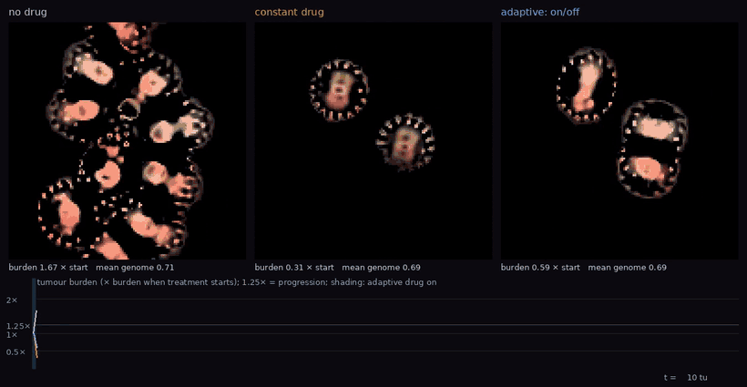
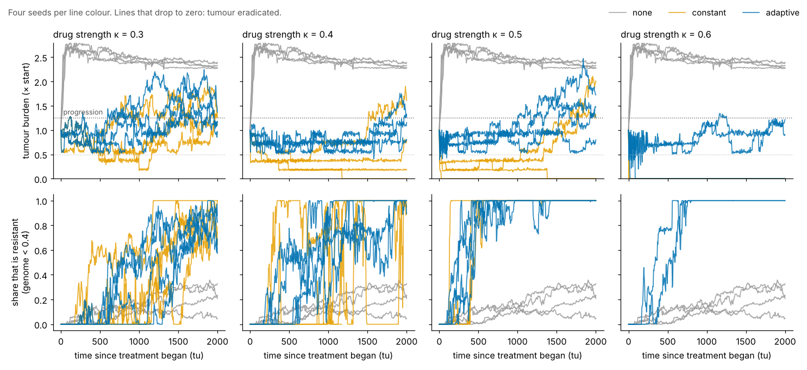
What you see. Under constant dosing a strong drug wipes the tumour out before slow cells can take over; a weaker drug leaves a blue, slow tumour that regrows. The adaptive tumour never dies: each pause lets it recover, and it turns blue too.
What the ledger says. Constant dosing eradicates the tumour in 0, 1, 2 and 4 of 4 seeds as the drug gets stronger, and every survivor ends up mostly slow C119observed. In 16 seed-and-dose pairs adaptive dosing did better twice, worse ten times and tied four times C120observed. Even with no drug, slow genomes are not driven out of a full tumour C121observed.
Why it matters, and what it does not show. Adaptive therapy rests on one assumption: in a crowded tumour, sensitive cells out-compete resistant ones. Our toy lacks that competition (once the world is full, dividing fast buys nothing), and without it the pauses only help the tumour. That matches the theory: Gatenby's models assume resistant cells are less fit than sensitive ones when they compete. It is also why adaptive therapy has been tried in cancers that standard treatment cannot cure, such as metastatic prostate cancer, rather than where a strong drug can wipe the tumour out. It says nothing about any real cancer or drug: this is a toy of our own design, an analogy in the language of the So what? wing.
Giving resistance a price
So we added the missing competition. In a crowd, slow matter now slowly decays, at a rate proportional to how slow it is and how full its neighbourhood is, and fast matter grows into the space it frees. This is the cost of resistance that adaptive therapy depends on. We tried two strengths of cost, reran every dose, and ran the weakest dose three times longer.
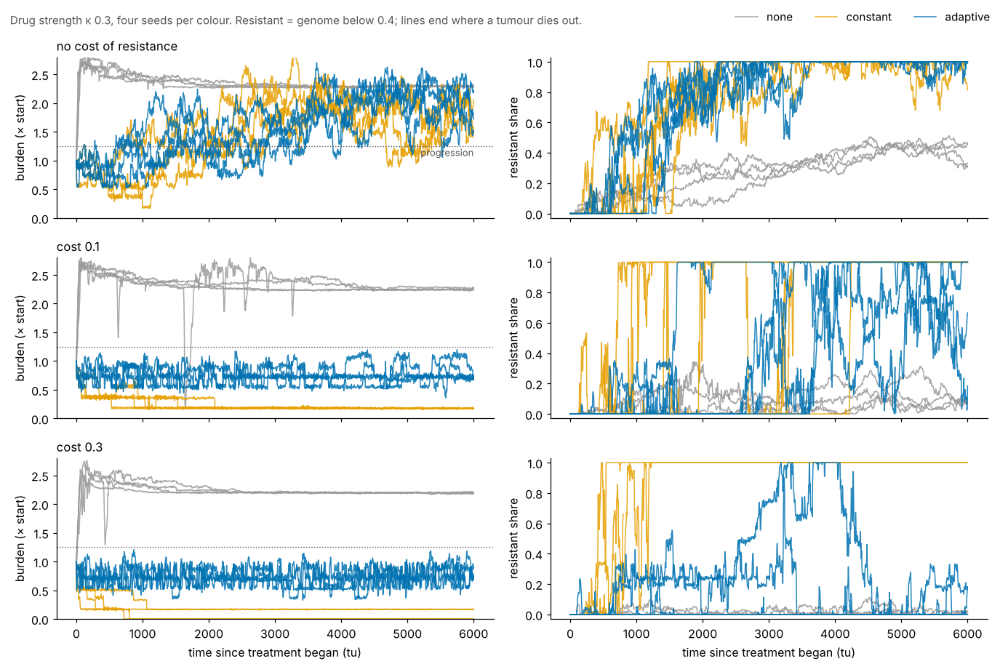
What you see. With the price, untreated tumours stay red. Under constant dosing the tumour shrinks to a small blue remnant (or vanishes) and stays there. Under adaptive dosing it hovers just below its starting size, and with the stronger price it stays mostly red: still sensitive to the drug, thousands of time units later.
What the ledger says. The price keeps untreated tumours almost free of slow matter C122observed. With it, no tumour progressed under either schedule, and constant dosing eradicated far more tumours than adaptive dosing C123observed. At the weak dose, constant dosing left a remnant that was entirely resistant; adaptive dosing held a tumour about four times larger that, with the stronger price, stayed sensitive, on 62–93% of the drug C124observed.
So who won? The price turned on adaptive therapy's mechanism: competition did keep resistance down. It did not produce adaptive therapy's payoff, a later relapse, because in our toy nothing relapsed. The resistant remnant under constant dosing just sat there, small, for 6000 time units. In patients the case for adaptive therapy is that the resistant remnant eventually regrows and kills; a toy where it doesn't will always favour the bigger hammer. The next experiment would give resistant cells a way to regrow slowly, and see whether a sensitive, controlled tumour then outlasts a small resistant one.
Sources
- Replicator notes
- The cell tracker, the growth runs and the 3-D runs
- GenomeLenia, the evolution runs and the invasion runs
- The therapy toy and every therapy run; with a cost of resistance: all doses and the long runs